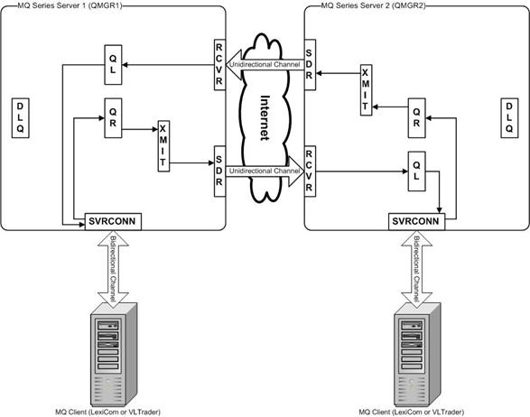
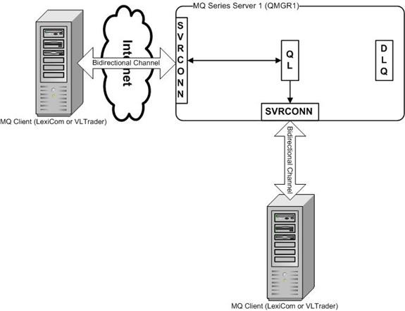

IBM MQSeries (also known as WebSphere MQ or IBM MQ) is a widely used
means of guaranteed message delivery. It uses Queue Managers containing local (and
sometimes remote) message queues to send and receive message data. MQSeries uses a
store-and-forward mechanism to transport the message data. If the remote Queue Manager is
not available, the local Queue Manager retains the message until the remote Queue Manager
is ready to receive it. Messages that cannot be delivered can eventually be stored in a
dead letter queue.
Messages are put on queues and are generally retrieved on a First-In-First-Out (FIFO)
basis. MQSeries also allows the use of a message-priority field (per-message) to put
higher-priority messages at the front of the queue. User authentication and message
security can also be applied to the sending and receiving channels.
IBM MQSeries includes a Java client API that allows an application (such as the Cleo Harmony application) to programamtically connect to a Queue Manager using
server-connection channels to PUT, GET and LIST messages on queues from either a local or
remote Queue Manager. These Java client API files are included as part of the Cleo Harmony installation.
There are two ways to access a partner's queues:
- Queue Manager to Queue Manager: Messages are written to a remote queue (QR) on
the user's local Queue Manager (QMGR1) that maps to a local queue (QL) on the remote
Queue Manager (QMGR2). Messages are transported over the internet via uni-directional
sender (SDR) and receiver (RCVR) channels. If required, MQSeries automatically converts
the data to the target queue manager's understood data format. If the remote queue
manager (QMGR2) is unavailable, the sender channel is not running, or the message cannot
be delivered for any other reason, the message is retained in either the transmission
queue (XMIT) or the dead-letter queue (DLQ) on the local Queue Manager (QMGR1). The
user must implement additional monitoring to periodically check the depth of these
queues and take the appropriate action.

- Direct Connection to the Queue Manager: Messages are sent to and received from
local queues (QL) on a Queue Manager (QMGR1) using bi-directional server-connection
channels (SVRCONN). User authentication and message encryption security (SSL) can be
applied to server-connection channels, if desired. This access method does not take
advantage of the store-and-forward mechanism; however, if the Queue Manager is not
available, an error will occur in the client and the message transport will be re-tried
at a later time. Additionally, if required, the Java MQ client API allows for automatic
conversion of the data to the target Queue Manager's understood data format.

Either of these methods can be used with VersaLex. Using this section,
decide which method fits your requirements and configure your Queue Manager(s) and MQ Host
appropriately.